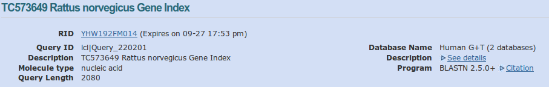
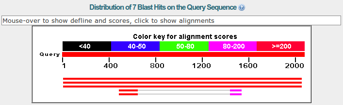
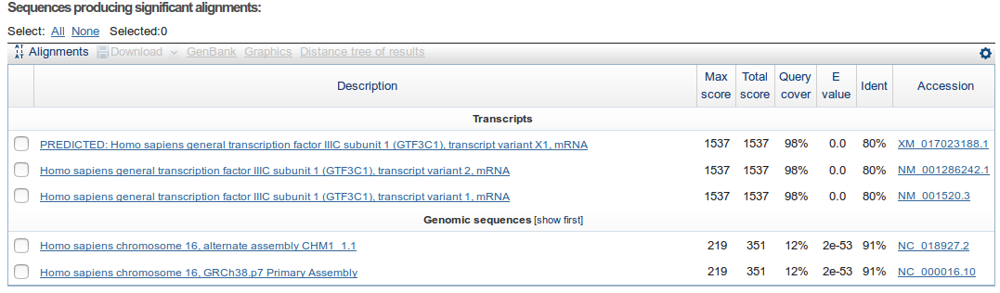

Blast Practice
BLAST database search
BLAST is the most used program to look for similar sequences in a database.
This practice is divided in two parts. In the first one we will get familiar with NCBI’s BLAST server and in the second we will use it to solve some practical problems.
NCBI’s BLAST server
In the main BLAST page at NCBI we can select different BLAST algorithms (blastn, blastp, blastx and tblastn) or different organism: Human, Mouse, Rat, etc. We can also run more specialized BLAST searches like Primer-BLAST or VecScreen.
We are going to run a BLASTN search using a rat sequence.
Query sequence
In the BLAST form we can paste our query sequence or, alternatively, we can introduce a NCBI sequence ID. We can restrict the search to a region in the sequence.
Database
The database choice is one of the most important ones because it will completely change the result. We have several databases available like: Human genomic + transcript, nt (all nucleotide sequences), Reference RNA, Reference genomic, Genomic sequences, etc. Alternatively, we can write an Entrez query and the query result will become the sequence database in which we will look for.
Program
Finnaly we can select which algorithm do we want to use: megablast, discontinious megablast and blastn. We can select the algorithm depending on the speed and the sensitivity that we want.
There are extra parameters in the section “algorithm parameters” like number of sequences to report or filters applied to the sequences.
Example
We are going to blast the rat sequence against the human database using megablast.
Once we submit the blast job we get a page in which we are inform about the estimated time to get the results.

The blast result page is divided in several. First we have some information about the query with: the name of the sequence queried, its length, the database and the program used.

The next section is a graphic summary with the alignments and its e-values shown by a color code.

After that we get a summary showing the sequences for which a significant alignment was found. For each sequence the e-value of its best HSP is shown. The table is sorted by default by the e-value.

How many similar sequences have BLAST found in the database?
And finnaly the alignments of the query sequence with the database seqeucnes (subjects). For each subject sequence the description and the alignments corresponding to the HSPs are shown.
How many HSPs have the first sequence, the second and the third?
Have all the HSP for a sequence the same value?
How are the HSPs within a sequence match sorted?
Which is the e-value that appears in the summary table for the subject?
Sequence function annotation
We have obtained from a sequencing project of Amblyomma variegatum several transcript sequences corresponding to different genes: tc154, tc55, tc320 and tc3. We want to find out the function for the proteins coded by those transcripts.
Which database type should we use DNA or protein?
Which blast program should we use?
Which database should we use?
Many proteins are tagged as predicted or hypothetical, what could that mean? Would we find this kind of proteins in Swiss-Prot? Would it be better to use Swiss-Prot?
Species classification
We are working in a hospital and we get a blood sample from a patient. The patient seems to have some kind of infection, but which one?
To help with the diagnose we extract genomic DNA from the patient blood and we do a PCR using primers design to amplify the ITS1 region. This region is used to classify many organisms and there are plenty of ITS1 sequences in the database. Once we finish the PCR we send it to a sequencing service and we get the sequence for our ITS1 back.
Which blast program and which database should we use?
Which is the species causing the infection? Is it serious? Can we determine the strain with this sequence?
Having into account that the sequencing error rate is 2%, should we get additional sequences from the species or is it enough with the one that we have?
Phylogeny
We want to build a phylogeny within the animals and we decide to use a mRNA from the frataxin gene.
Which would be the advantages and disadvantages of using nr vs refseq?
If we use refseq do we get the same result by using blastn vs tblastx? How many sequences do we get for both databases? Why are we getting theses results?
In the tblastx result we get a Xenopus frataxin. This sequece have a better e-value than some primate sequences, why?
What would happen if we were to use to megablast program?
What would happen if you use the blastn program instead of megablast, but you do not filter the human repeats?
Once you have the blast result that you like the most download all sequences by clicking in “Select All” and “Get selected sequences”.
Primer design
We want to amplify a region of a human cyclin from an RNA sample to check the expression. We want to design some priemrs and we want to make sure that the primers won’t amplify messengers from other genes. You can use the Primer-BLAST program. Make sure that the primers are specific to the cyclin gene and that they do not amplify the genomic DNA. Do a blast against the RefSeq mRNA database.
Check if these to primers would work: primerf and primerr.
Could you do a similar design for the mRNA from the frataxin gene?